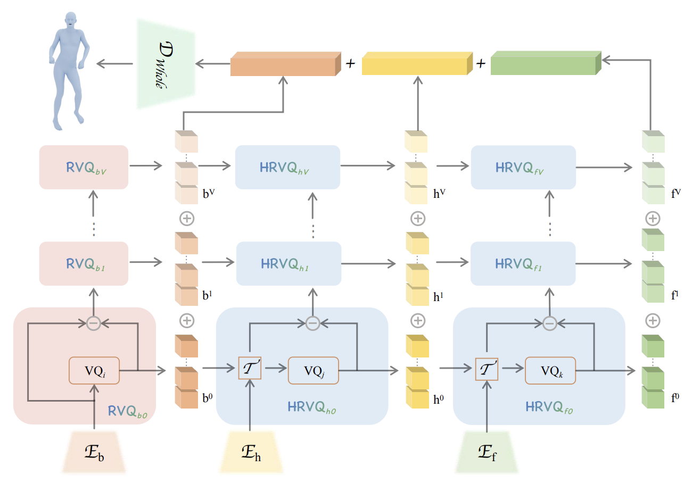

Full Publications
Full list of publications. For a curated selection of first-author works, see the homepage. Also available on Google Scholar.
20262 papers
-
IGen: Scalable Data Generation for Robot Learning from Open-World Images
-
Splatwizard: A Benchmark Toolkit for 3D Gaussian Splatting Compression
20259 papers
-

Music-Aligned Holistic 3D Dance Generation via Hierarchical Motion Modeling
-
TextIR: A Simple Framework for Text-based Editable Image Restoration
An effective framework that allows the user to control the restoration process of degraded images with text descriptions, using the text-image feature compatibility of CLIP. Supports image inpainting, super-resolution, and colorization.
-
Lungmix: A Mixup-Based Strategy for Generalization in Respiratory Sound Classification
-
PulmoScan: A Practical Pulmonary Disease Pre-Screening System
20245 papers
-
Tuning-Free Visual Customization via View Iterative Self-Attention Control
-
A Joint Approach to Local Updating and Gradient Compression for Efficient Asynchronous Federated Learning
20221 paper
-
Cost Effective MLaaS Federation: A Combinatorial Reinforcement Learning Approach
As naively using multiple ML APIs can lead to lower analytical accuracy and poor user experience, we employ reinforcement learning to select the optimal combination of MLaaSes, thus maximizing accuracy while minimizing cost.